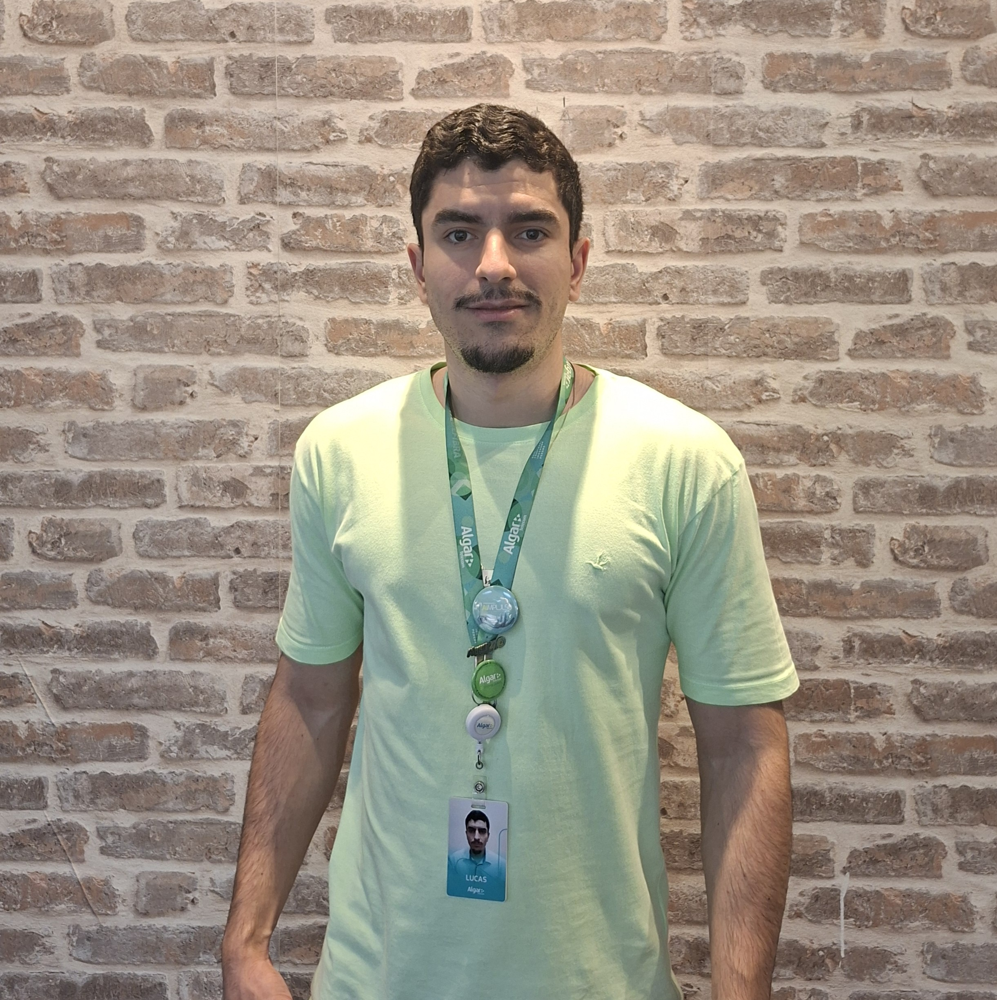

Bem-vindo ao meu portfólio!
Transformando Informação em Valor de Negócio. Atualmente, aplico e fortaleço minhas habilidades em um ambiente corporativo dinâmico na Algar, atuando diretamente com projetos que exigem a aplicação de conhecimentos técnicos e interpessoais. Proficiência em Python, SQL (para tratamento e manipulação de dados), Git e versionamento de código. Visualização e BI: Experiência prática em transformar dados brutos em insights claros, utilizando ferramentas como Power BI.
Entre em contato pelas redes:
 LinkedIn
LinkedIn GitHub
GitHub